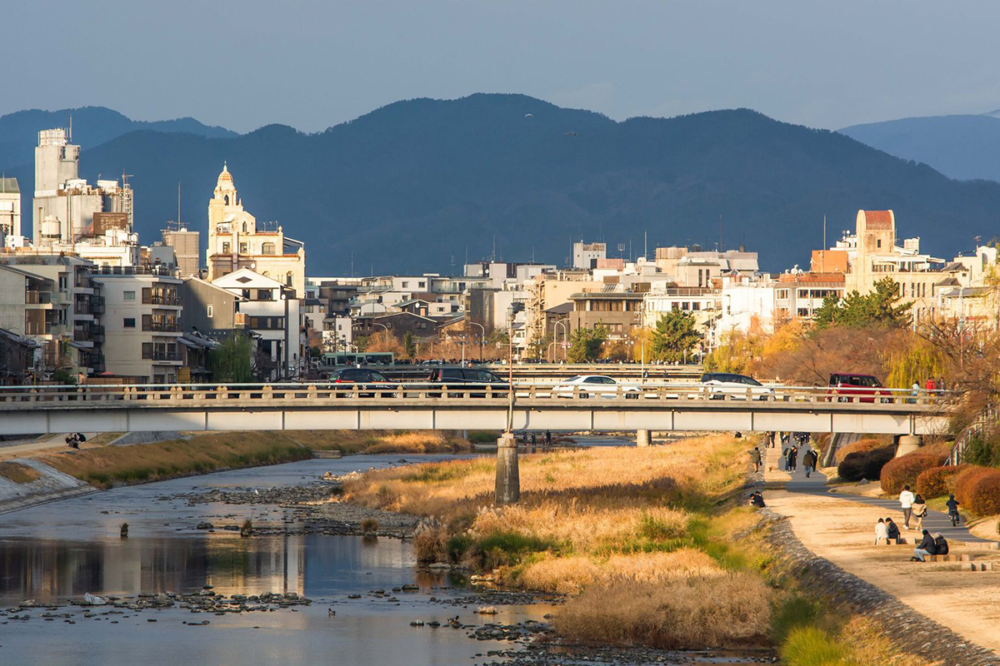
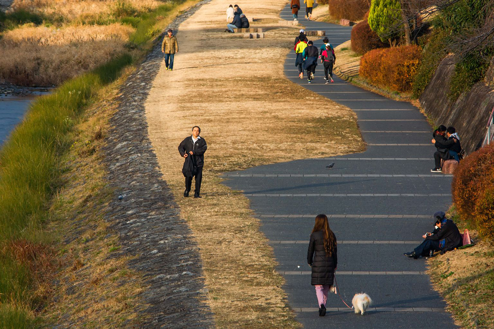
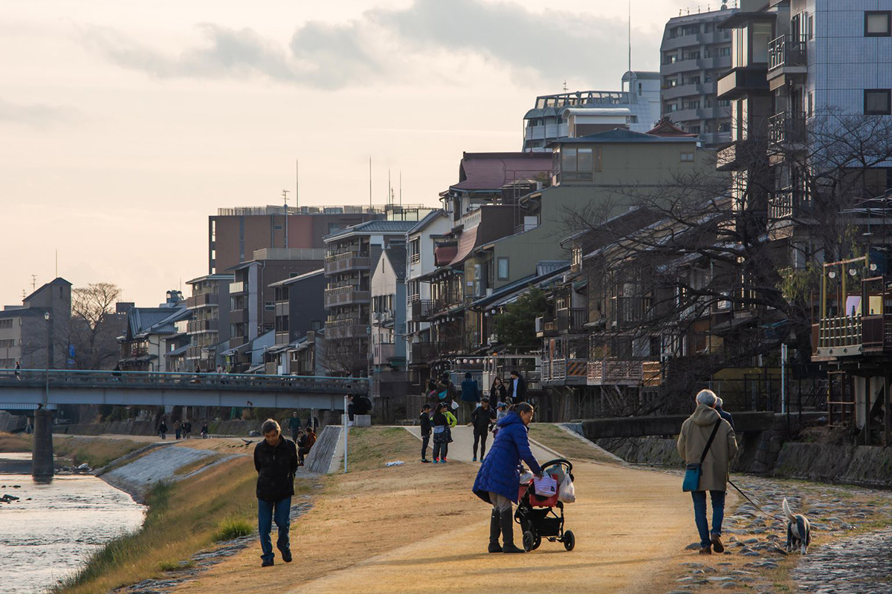
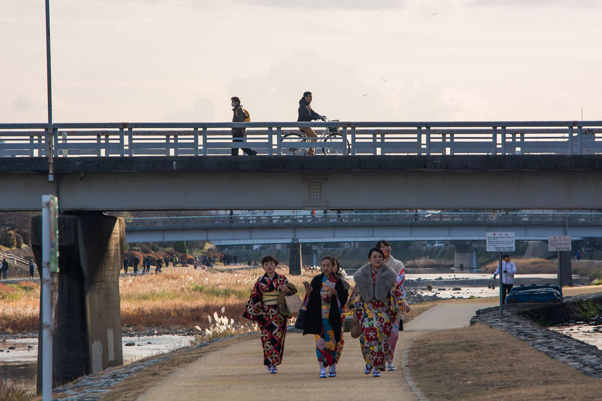
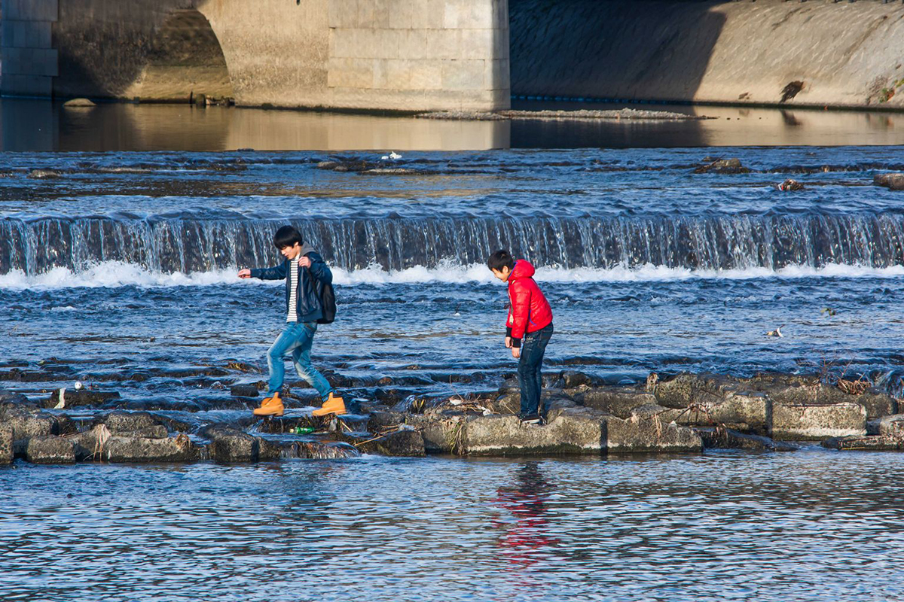
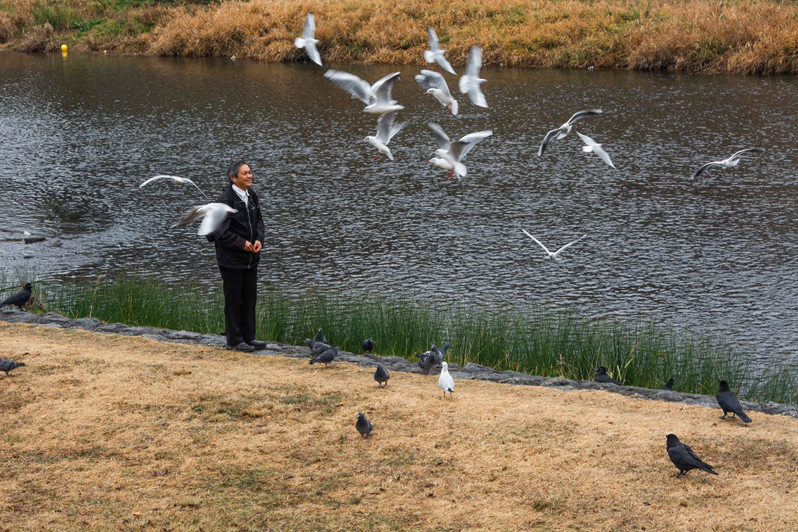
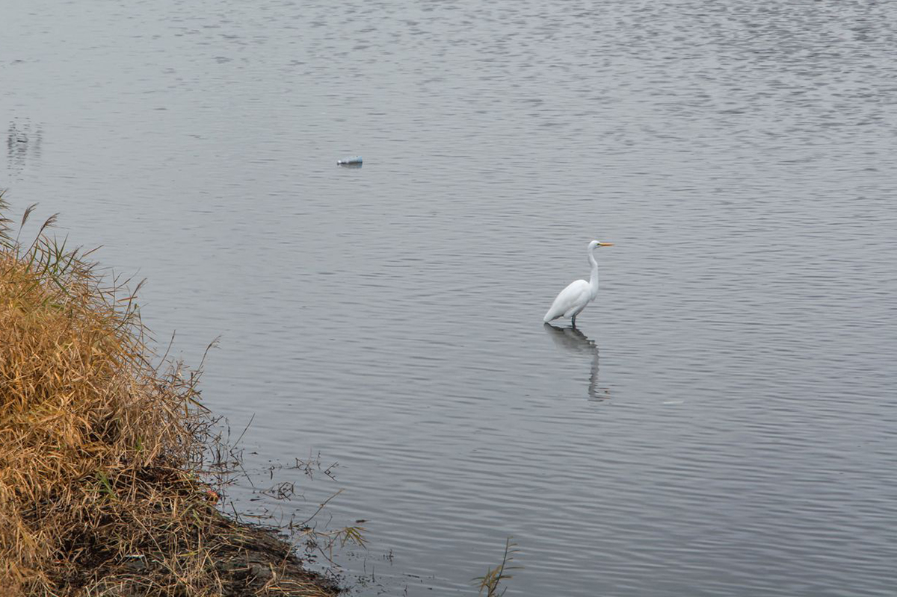

A DAY OF NATURE'S INVASION
If without birds, Kyoto's winter sky would be completely still, with orderly roofs sitting under the
heavy mountain silhouettes. Tracing birds across Kyoto's repetitive blocks, I inevitably ended up at Kamo River:
a shallow stream of water and aqua-plants that runs through Kyoto's north-south axis, contributing the only major
curvature to the rigid urban checkerboard.
However, Kamo River is not necessarily a bird paradise that would cut through the human-saturated urbanity. Instead,
my walks saw a human-saturated nature framed by paved pathways and bridges. Showering under a golden sunset, people walked,
paused, and sit along the river. Some dressed as if they came directly from office cubes; some staged themselves at the
center of the esplanade to show off their kimonos; some adventured off track to get their shoes wet on the gravel paths across the water...
This nature may indeed be artificial by all means. Still, the birds can offer them a genuine escape from the crowded buildings and rumbling streets.






